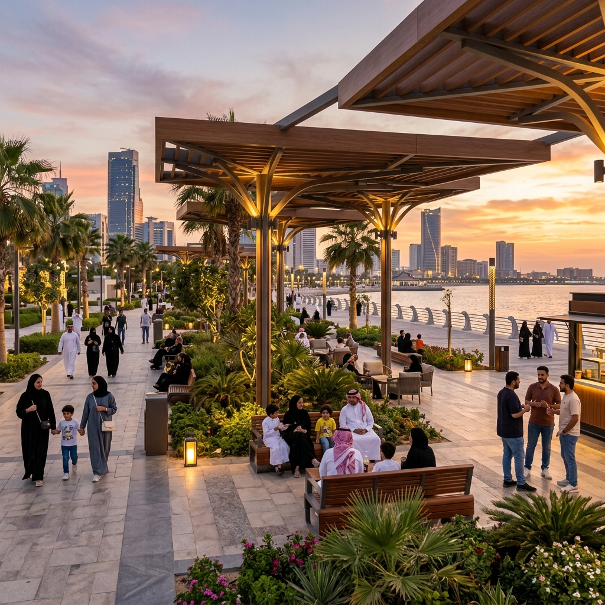
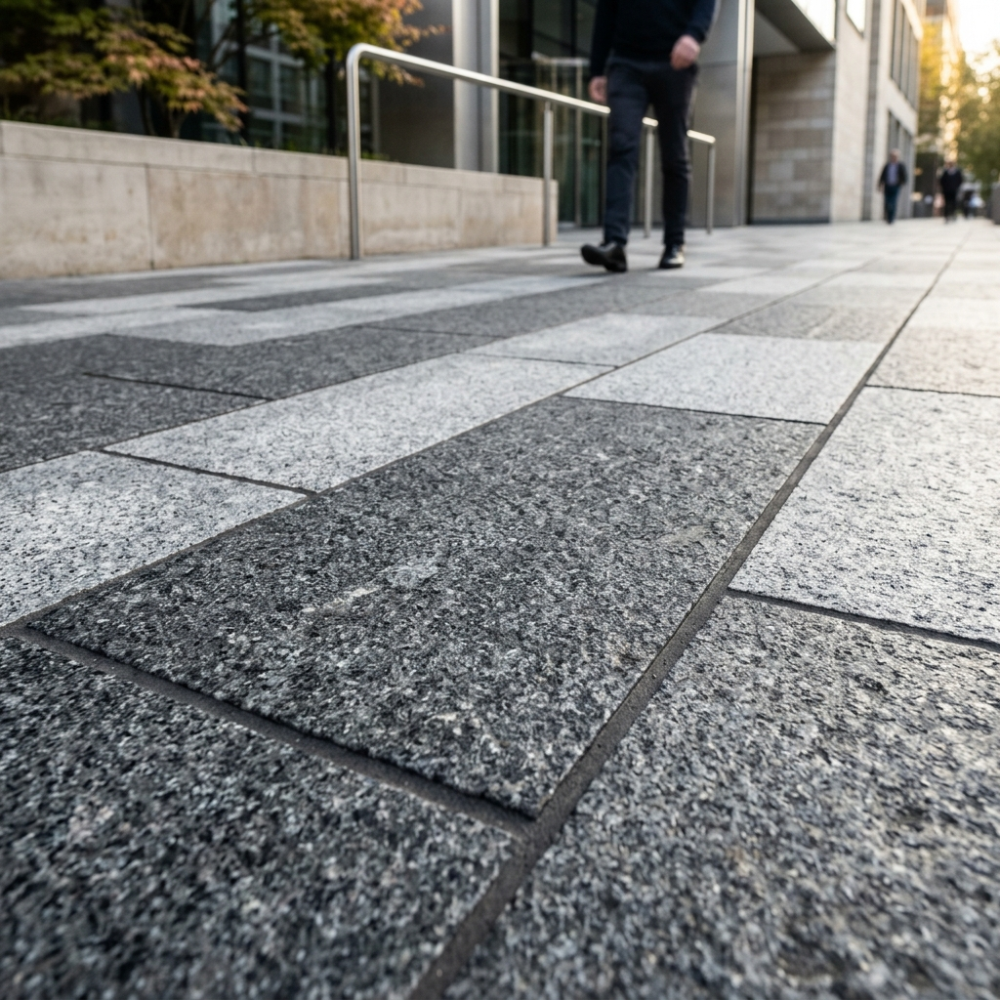

الشارع كفراغ حضري فعال، لا مجرد ممر مروري
تصنيف مزدوج حسب الوظيفة والطابع الحضري
الشوارع الشريانية
تخدم الحركة الرئيسية لمسافات طويلة، وتتميز بكثافة مرورية عالية وسرعات أكبر.
- أولوية نسبية لحركة المركبات.
- تنظيم عبور المشاة.
- تقليل نقاط التقاطع المباشر.
- عزل نسبي بين الحركة السريعة والمشاة.

الشوارع التجميعية
تربط بين الشوارع المحلية والشريانية، وتخدم حركة متوسطة تحتاج توازنًا دقيقًا.
- توازن بين المركبات والمشاة.
- توفير عناصر تهدئة السرعة.
- دعم الأنشطة المحلية.

الشوارع المحلية
تخدم الأحياء السكنية، وتتميز بحركة محدودة وسرعات منخفضة وطابع اجتماعي أوضح.
- أولوية للمشاة.
- تهدئة حركة المرور.
- تعزيز الطابع الاجتماعي.

الشوارع التجارية
شوارع مرتفعة النشاط والحركة اليومية، تحتاج أرصفة عريضة وواجهات نشطة وتنظيمًا دقيقًا للخدمات.
- نشاط عال وواجهات نشطة.
- كثافة مشاة مرتفعة.
- مناطق جلوس وخدمات منظمة.
الشوارع السكنية
شوارع يغلب عليها الطابع المحلي والخصوصية، وتحتاج تهدئة مرورية وبيئة مناسبة للمشي والتفاعل.
- هدوء نسبي وخصوصية.
- مساحات لعب وتوقف آمن.
- سرعات منخفضة ووصول واضح.
الشوارع الترفيهية أو السياحية
مرتبطة بالواجهات البحرية أو الوجهات العامة والمناطق النشطة، وتعتمد على جودة التجربة البصرية والحسية.
- قريبة من وجهات جذب.
- تعتمد على تجربة المستخدم.
- تدعم المشي والتوقف والأنشطة.
خمسة مبادئ تضبط قرارات الشارع
القطاع الحضري كمنظومة مناطق متكاملة
محاور يجب تحويلها إلى تفاصيل قابلة للمراجعة
الأرصفة ومسارات المشاة
تُصمم باعتبارها العنصر الأهم في أنسنة الشوارع، مع مسار صافٍ ومستمر وخالٍ من العوائق، وأرضيات عالية الجودة وسهلة الصيانة ومناسبة للمناخ.
التقاطعات وعبور المشاة
تقليل مسافات العبور، رفع وضوح مسارات المشاة، استخدام منحدرات مريحة، وتقليل أنصاف أقطار الدوران داخل البيئة الحضرية.
التظليل والتشجير
توزيع الأشجار بانتظام، اختيار أنواع مناسبة للمناخ، واستخدام مظلات صناعية عند الحاجة مع عدم إعاقة المسار الصافي.
الأثاث الحضري
يوضع ضمن منطقة الأثاث والخدمات، ويراعى ارتباطه بالتشجير والأنشطة، مع تقليل ازدحام العناصر الرأسية.
الإضاءة
أولوية إضاءة مسارات المشاة والتقاطعات، وتنسيق مواقع الأعمدة مع الأشجار والأثاث والخدمات، وتجنب الوهج والتلوث الضوئي.
المواد والأرضيات
اختيار خامات مقاومة للانزلاق والتآكل وثابتة اللون وسهلة الفك والاستبدال، مع لغة مادية موحدة نسبيًا.
الواجهات النشطة
دعم الأنشطة الأرضية، تقليل الأسوار الصماء، وتشجيع الشفافية البصرية والارتباط بين الداخل والخارج.